Chapter 5 Body condition ~ cytokines
5.2 Read in data
cyto <- read.csv("Output Files/cleaned_cytokine.csv")
meta <- read.csv("Output Files/metadata_cyto.csv")
mindc <- read.csv("Input Files/mindc.csv") %>%
mutate(half=value/2)
# Merge cytokine & metadata
data <- merge(cyto, meta, by="Sample")
# Tidy data, remove cytokines with < 10% (11) detections, remove pups with NA bc
data_tidy <-
data %>%
select(2:14) %>%
select_if(function(x) sum(x>0) > 11) %>%
mutate(bc=data$bc_bin,
bmi=data$bmi_bin,
bmi2=data$bmi_bin2,
sample=data$Sample)5.3 Log-transforme scaled,center cytokine data
# Make all non-detects half the limit of detection
data_half <- data_tidy
for (i in 1:nrow(data_half)) {
for (j in 1:9) {
{if (data_half[i,j]==0) {
k <- which(mindc==colnames(data_half)[j])
data_half[i,j] <- mindc[k,3]
}
else{next}
}
}
}
# Log transform, scale, and center data
data_log <-
data_half %>%
mutate_at(1:9, log)
data_scaled <-
data_half %>%
mutate_at(1:9, log) %>%
mutate_at(1:9, function(x) scale(x, center=TRUE, scale=TRUE))
data_scaled_bc <-
data_scaled %>%
filter(!bc=="NA")
data_scaled_bmi <-
data_scaled %>%
filter(!bmi=="NA")5.4 PCAs
PCA_scaled_bc <-
prcomp(~IFNg+IL.2+IL.6+IL.7+IL.8+IL.10+IL.15+IL.18+KC.like,
data=data_scaled_bc,
center=FALSE,
scale=FALSE)
autoplot(PCA_scaled_bc, data=data_scaled_bc, shape="bc") +
scale_shape_manual(values=c(1,19,15), name="Body Condition") +
theme_bw() +
theme(panel.grid=element_blank(), text=element_text(size=8),
legend.background=element_rect(size=0.5, linetype="solid", colour ="black"),
legend.position="bottom")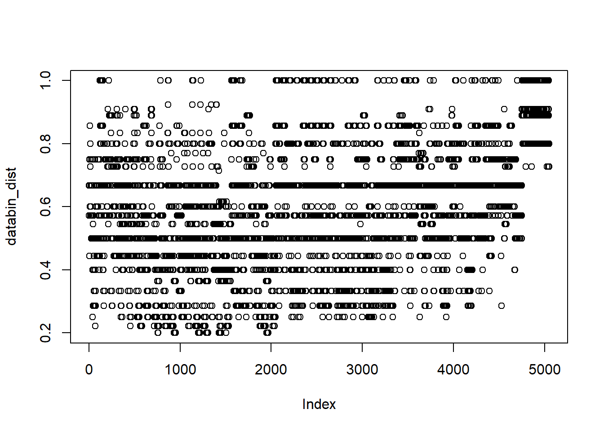
PCA_scaled_bmi <-
prcomp(~IFNg+IL.2+IL.6+IL.7+IL.8+IL.10+IL.15+IL.18+KC.like,
data=data_scaled_bmi,
center=FALSE,
scale=FALSE)
autoplot(PCA_scaled_bmi, data=data_scaled_bmi, shape="bmi") +
scale_shape_manual(values=c(1,19), name="Body Mass Index") +
theme_bw() +
theme(panel.grid=element_blank(), text=element_text(size=8),
legend.background=element_rect(size=0.5, linetype="solid", colour ="black"),
legend.position="bottom")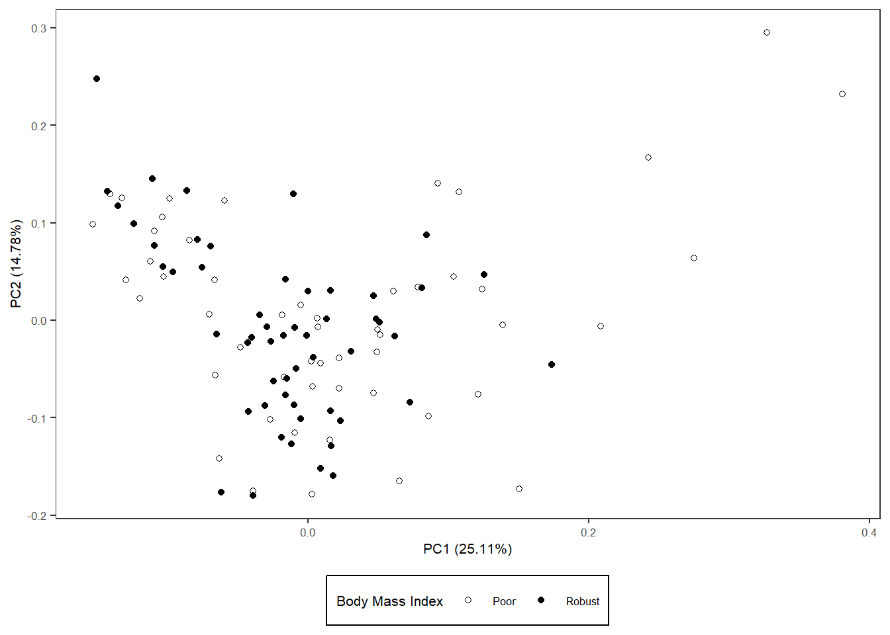
autoplot(PCA_scaled_bmi, data=data_scaled_bmi, shape="bmi2") +
scale_shape_manual(values=c(1,19,15), name="Body Mass Index 2") +
theme_bw() +
theme(panel.grid=element_blank(), text=element_text(size=8),
legend.background=element_rect(size=0.5, linetype="solid", colour ="black"),
legend.position="bottom")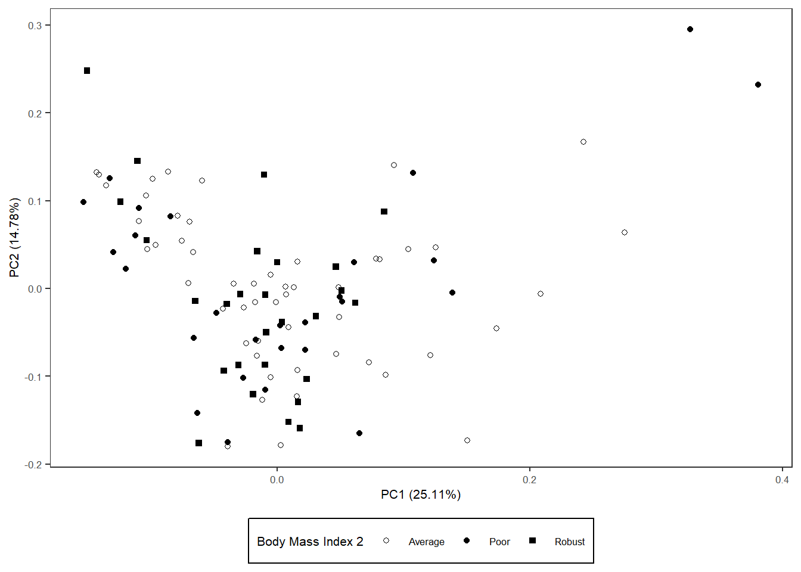
5.4.1 Body Condition
autoplot(PCA_scaled_bc, data=data_scaled_bc, shape="bc") +
scale_shape_manual(values=c(1,19,15), name="Body Condition") +
theme_bw() +
theme(panel.grid=element_blank(), text=element_text(size=8),
legend.background=element_rect(size=0.5, linetype="solid", colour ="black"),
legend.position="bottom")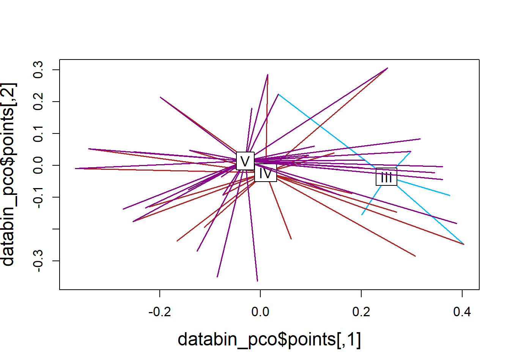
PCA_scaled_bc_df <- data.frame(x=PCA_scaled_bc$x[,1],
y=PCA_scaled_bc$x[,2],
bc=data_scaled_bc$bc)
PCA_scaled_bc_ggplot <-
ggplot(PCA_scaled_bc_df,
aes(x=x,
y=y,
col=bc)) +
geom_point() +
stat_ellipse() +
labs(x="PC1 (24.89%)",
y = "PC2 (15.08%)",
name="Body Condition") +
scale_color_manual("Body Condition",
values=c("#9d9d9d","#008ba2", "#000000")) +
theme_bw() +
theme(panel.grid=element_blank(),
legend.position.inside=c(0.1, 0.1))
PCA_scaled_bc_ggplot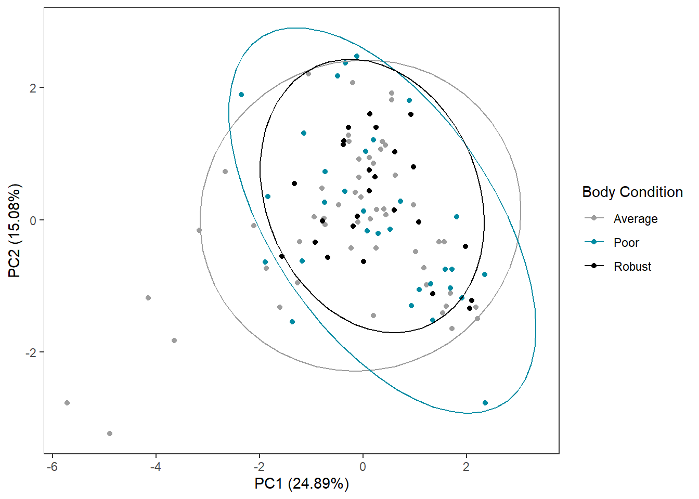
5.4.2 Body Mass Index
PCA_scaled_bmi_df <- data.frame(x=PCA_scaled_bmi$x[,1],
y=PCA_scaled_bmi$x[,2],
bmi=data_scaled_bmi$bmi)
PCA_scaled_bmi_ggplot <-
ggplot(PCA_scaled_bmi_df,
aes(x=x,
y=y,
col=bmi)) +
geom_point() +
stat_ellipse() +
labs(x="PC1 (25.11%)",
y = "PC2 (14.78%)",
name="Body Mass Index") +
scale_color_manual("Body Mass Index",
values=c("#9d9d9d","#008ba2")) +
theme_bw() +
theme(panel.grid=element_blank(),
legend.position.inside=c(0.1, 0.1))
PCA_scaled_bmi_ggplot
5.4.3 Body Mass Index 2
PCA_scaled_bmi2_df <- data.frame(x=PCA_scaled_bmi$x[,1],
y=PCA_scaled_bmi$x[,2],
bmi2=data_scaled_bmi$bmi2)
PCA_scaled_bmi2_ggplot <-
ggplot(PCA_scaled_bmi2_df,
aes(x=x,
y=y,
col=bmi2)) +
geom_point() +
stat_ellipse() +
labs(x="PC1 (25.11%)",
y = "PC2 (14.78%)",
name="Body Mass Index") +
scale_color_manual("Body Mass Index",
values=c("#9d9d9d","#008ba2", "black")) +
theme_bw() +
theme(panel.grid=element_blank(),
legend.position.inside=c(0.1, 0.1))
PCA_scaled_bmi2_ggplot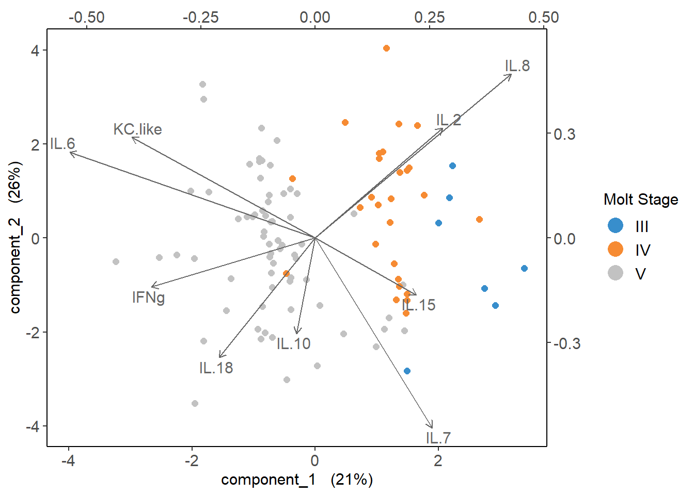
5.5 Test for normality
# Create dataframe for results
norm_results <- data.frame(matrix(ncol=0, nrow=9)) %>%
mutate(cyto=colnames(data_scaled)[1:9],
W=NA,
pvalue=NA)
# Truncate data
data_norm <-
data_scaled[,1:9]
# Test!
for (i in 1:9) {
test <- shapiro.test(data_norm[,i])
norm_results[i,2] <- round(test$statistic, digits=3)
norm_results[i,3] <- test$p.value
}
norm_results # all not normally distributed## cyto W pvalue
## 1 IFNg 0.921 3.985298e-06
## 2 IL.2 0.824 1.894239e-10
## 3 IL.6 0.620 7.082195e-16
## 4 IL.7 0.886 5.803970e-08
## 5 IL.8 0.364 3.175029e-20
## 6 IL.10 0.612 4.869702e-16
## 7 IL.15 0.408 1.413657e-19
## 8 IL.18 0.972 1.555482e-02
## 9 KC.like 0.571 7.627507e-175.6 Cramer Test
Multivariate composition of the cytokine pattern between each molt stage pairwise comparison It can handle multiple variables, potentially complex interactions and correlations.
# Separate data by body condition
poor <-
data_scaled %>%
filter(bc=="Poor") %>%
select(1:9) %>%
data.matrix()
average <-
data_scaled %>%
filter(bc=="Average") %>%
select(1:9) %>%
data.matrix()
robust <-
data_scaled %>%
filter(bc=="Robust") %>%
select(1:9) %>%
data.matrix()
# Run Cramer Tests!
cramer.test(poor, average)##
## 9 -dimensional nonparametric Cramer-Test with kernel phiCramer
## (on equality of two distributions)
##
## x-sample: 31 values y-sample: 52 values
##
## critical value for confidence level 95 % : 3.284217
## observed statistic 1.982438 , so that
## hypothesis ("x is distributed as y") is ACCEPTED .
## estimated p-value = 0.4135864
##
## [result based on 1000 ordinary bootstrap-replicates]##
## 9 -dimensional nonparametric Cramer-Test with kernel phiCramer
## (on equality of two distributions)
##
## x-sample: 52 values y-sample: 25 values
##
## critical value for confidence level 95 % : 3.108548
## observed statistic 1.921302 , so that
## hypothesis ("x is distributed as y") is ACCEPTED .
## estimated p-value = 0.3736264
##
## [result based on 1000 ordinary bootstrap-replicates]##
## 9 -dimensional nonparametric Cramer-Test with kernel phiCramer
## (on equality of two distributions)
##
## x-sample: 31 values y-sample: 25 values
##
## critical value for confidence level 95 % : 3.144398
## observed statistic 2.04453 , so that
## hypothesis ("x is distributed as y") is ACCEPTED .
## estimated p-value = 0.3166833
##
## [result based on 1000 ordinary bootstrap-replicates]# Separate data by Body Mass Index
bmi_poor <-
data_scaled %>%
filter(bmi=="Poor") %>%
select(1:9) %>%
data.matrix()
bmi_robust <-
data_scaled %>%
filter(bmi=="Robust") %>%
select(1:9) %>%
data.matrix()
cramer.test(bmi_poor, bmi_robust) ##
## 9 -dimensional nonparametric Cramer-Test with kernel phiCramer
## (on equality of two distributions)
##
## x-sample: 52 values y-sample: 54 values
##
## critical value for confidence level 95 % : 2.996358
## observed statistic 2.586065 , so that
## hypothesis ("x is distributed as y") is ACCEPTED .
## estimated p-value = 0.1278721
##
## [result based on 1000 ordinary bootstrap-replicates]# Separate data by Body Mass Index2
bmi2_poor <-
data_scaled %>%
filter(bmi2=="Poor") %>%
select(1:9) %>%
data.matrix()
bmi2_avg <-
data_scaled %>%
filter(bmi2=="Average") %>%
select(1:9) %>%
data.matrix()
bmi2_robust <-
data_scaled %>%
filter(bmi2=="Robust") %>%
select(1:9) %>%
data.matrix()
# Cramer test
cramer.test(bmi2_poor, bmi2_avg)##
## 9 -dimensional nonparametric Cramer-Test with kernel phiCramer
## (on equality of two distributions)
##
## x-sample: 27 values y-sample: 52 values
##
## critical value for confidence level 95 % : 3.224542
## observed statistic 1.207687 , so that
## hypothesis ("x is distributed as y") is ACCEPTED .
## estimated p-value = 0.9140859
##
## [result based on 1000 ordinary bootstrap-replicates]##
## 9 -dimensional nonparametric Cramer-Test with kernel phiCramer
## (on equality of two distributions)
##
## x-sample: 52 values y-sample: 27 values
##
## critical value for confidence level 95 % : 2.958585
## observed statistic 1.399306 , so that
## hypothesis ("x is distributed as y") is ACCEPTED .
## estimated p-value = 0.7272727
##
## [result based on 1000 ordinary bootstrap-replicates]##
## 9 -dimensional nonparametric Cramer-Test with kernel phiCramer
## (on equality of two distributions)
##
## x-sample: 27 values y-sample: 27 values
##
## critical value for confidence level 95 % : 3.147886
## observed statistic 1.385996 , so that
## hypothesis ("x is distributed as y") is ACCEPTED .
## estimated p-value = 0.7982018
##
## [result based on 1000 ordinary bootstrap-replicates]5.7 Cytokine Importance
Not doing because no sig difference among body condition groups.
# Prepare data for CART
data_cart <-
lapply(data_scaled, c) %>%
data.frame() %>%
select(!sample) %>%
mutate(bc=factor(bc, levels=c("Poor", "Average", "Robust")))
data_cart_bmi <-
lapply(data_scaled, c) %>%
data.frame() %>%
select(!sample) %>%
mutate(bmi=factor(bmi, levels=c("Poor", "Robust")))
data_cart_bmi2 <-
lapply(data_scaled, c) %>%
data.frame() %>%
select(!sample) %>%
mutate(bmi2=factor(bmi2, levels=c("Poor", "Average", "Robust")))5.8 How different groups are
5.8.1 PLSDA - Body Condition
pls_x <-
data_cart %>%
filter(!bc=="NA") %>%
select(1:9)
pls_y <-
data_cart %>%
select(bc) %>%
filter(!bc=="NA")
# PLSDA Model
plsda_model <- mixOmics::plsda(pls_x,
pls_y$bc,
scale=FALSE,
ncomp=9)
plotIndiv(plsda_model,
ellipse=TRUE,
ind.names=FALSE,
col.per.group=c("#9d9d9d","#008ba2", "black"),
pch=16,
legend=TRUE,
legend.title="Body Condition",
style="lattice",
title="PLS-DA Comp 1 - 2")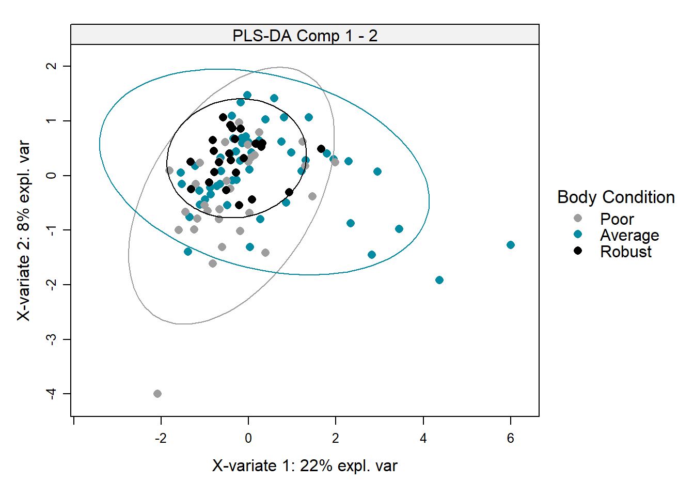
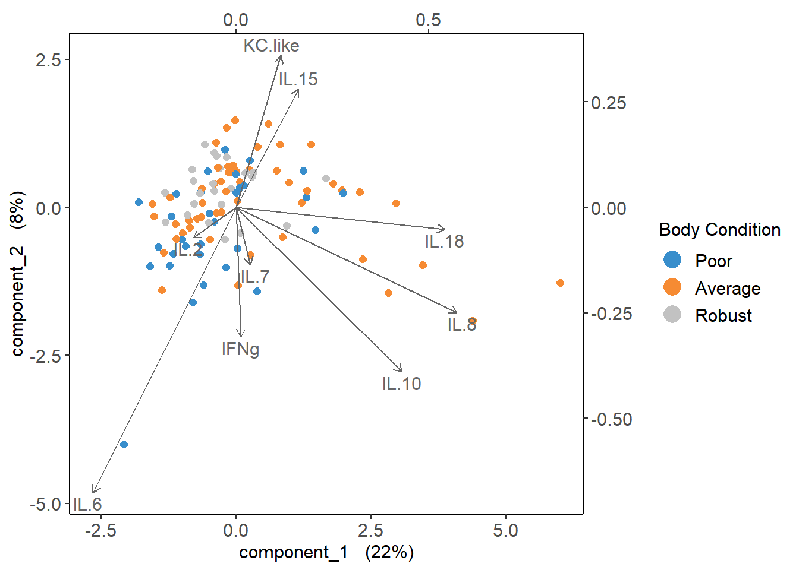
# ggplot2
plsda_ggplot <-
data.frame(x = plsda_model$variates$X[,1],
y = plsda_model$variates$X[,2],
bc = plsda_model$Y)
bc_plsda_ggplot <-
ggplot(plsda_ggplot,
aes(x=x,
y=y,
col=bc)) +
geom_point() +
stat_ellipse() +
labs(x="x-variate 1 (21%)",
y = "x-variate 2 (9%)",
name="Body Condition") +
scale_color_manual("Body Condition",
values=c("#9d9d9d","#008ba2", "black")) +
theme_bw() +
theme(panel.grid=element_blank(),
legend.position=c(0.1, 0.1))
bc_plsda_ggplot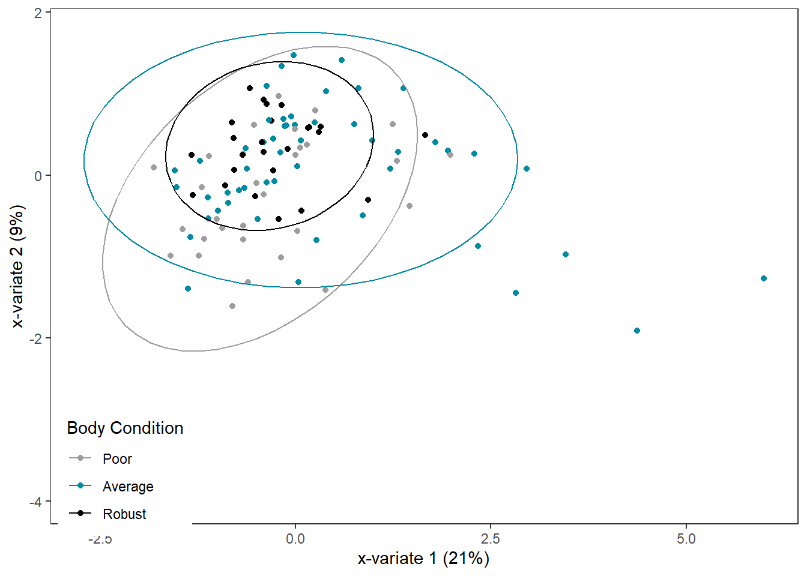
5.8.2 PLSDA - Body Mass Index
pls_x_bmi <-
data_cart_bmi %>%
filter(!bmi=="NA") %>%
select(1:9)
pls_y_bmi <-
data_cart_bmi %>%
filter(!bmi=="NA") %>%
select(bmi)
# PLSDA Model
plsda_model_bmi <- mixOmics::plsda(pls_x_bmi,
pls_y_bmi$bmi,
scale=FALSE,
ncomp=9)
plotIndiv(plsda_model_bmi,
ellipse=TRUE,
ind.names=FALSE,
col.per.group=c("#9d9d9d","#008ba2"),
pch=16,
legend=TRUE,
legend.title="Body Mass Index",
style="lattice",
title="PLS-DA Comp 1 - 2")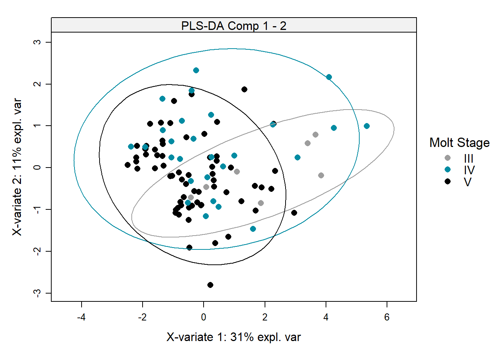
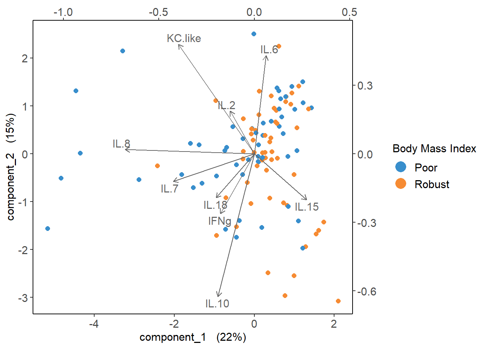
# ggplot2
plsda_ggplot_bmi <-
data.frame(x = plsda_model_bmi$variates$X[,1],
y = plsda_model_bmi$variates$X[,2],
bmi = plsda_model_bmi$Y)
bmi_plsda_ggplot <-
ggplot(plsda_ggplot_bmi,
aes(x=x,
y=y,
col=bmi)) +
geom_point() +
stat_ellipse() +
labs(x="x-variate 1 (22%)",
y = "x-variate 2 (15%)",
name="Body Mass Index") +
scale_color_manual("Body Mass Index",
values=c("#9d9d9d","#008ba2")) +
theme_bw() +
theme(panel.grid=element_blank(),
legend.position=c(0.1, 0.1))
bmi_plsda_ggplot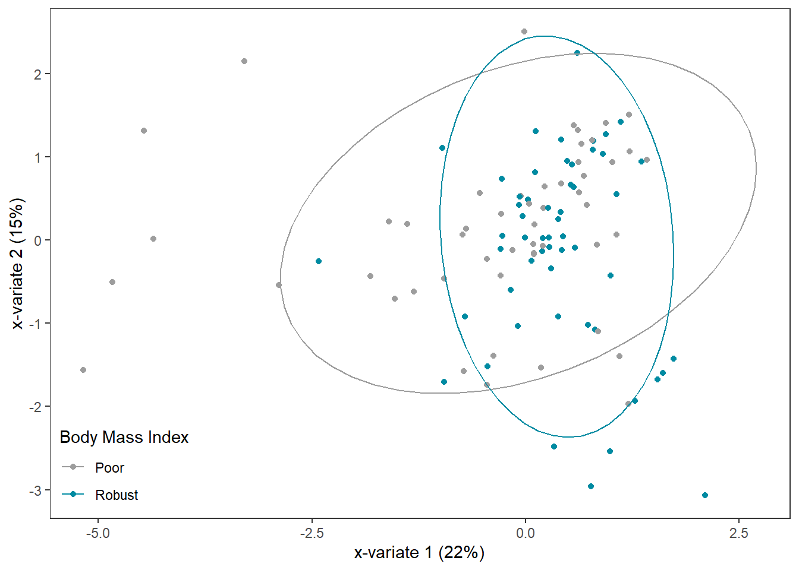
5.8.3 PLSDA - Body Mass Index 2
pls_x_bmi2 <-
data_cart_bmi %>%
filter(!bmi2=="NA") %>%
select(1:9)
pls_y_bmi2 <-
data_cart_bmi %>%
filter(!bmi2=="NA") %>%
select(bmi2)
# PLSDA Model
plsda_model_bmi2 <- mixOmics::plsda(pls_x_bmi2,
pls_y_bmi2$bmi2,
scale=FALSE,
ncomp=9)
plotIndiv(plsda_model_bmi2,
ellipse=TRUE,
ind.names=FALSE,
col.per.group=c("#9d9d9d","#008ba2", "black"),
pch=16,
legend=TRUE,
legend.title="Body Mass Index 2",
style="lattice",
title="PLS-DA Comp 1 - 2")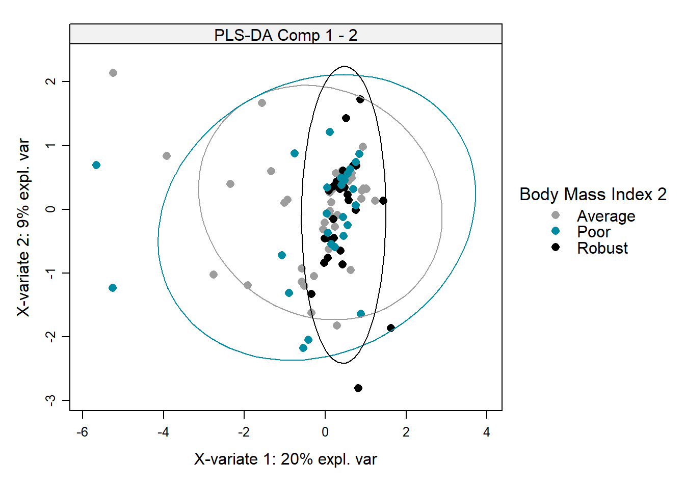
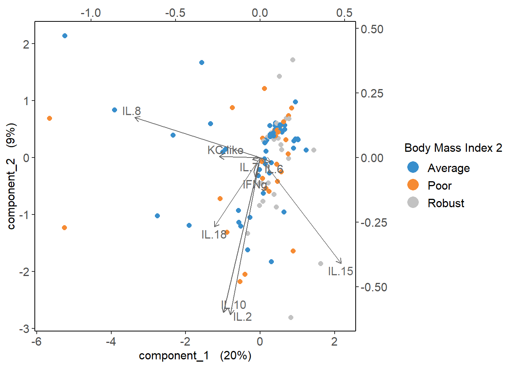
# ggplot2
plsda_ggplot_bmi2 <-
data.frame(x = plsda_model_bmi2$variates$X[,1],
y = plsda_model_bmi2$variates$X[,2],
bmi2 = plsda_model_bmi2$Y)
bmi2_plsda_ggplot <-
ggplot(plsda_ggplot_bmi2,
aes(x=x,
y=y,
col=bmi2)) +
geom_point() +
stat_ellipse() +
labs(x="x-variate 1 (20%)",
y = "x-variate 2 (9%)",
name="Body Mass Index 2") +
scale_color_manual("Body Mass Index 2",
values=c("#9d9d9d","#008ba2", "black")) +
theme_bw() +
theme(panel.grid=element_blank(),
legend.position=c(0.1, 0.1))
bmi2_plsda_ggplot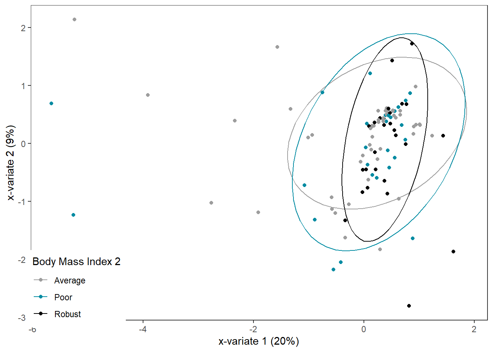